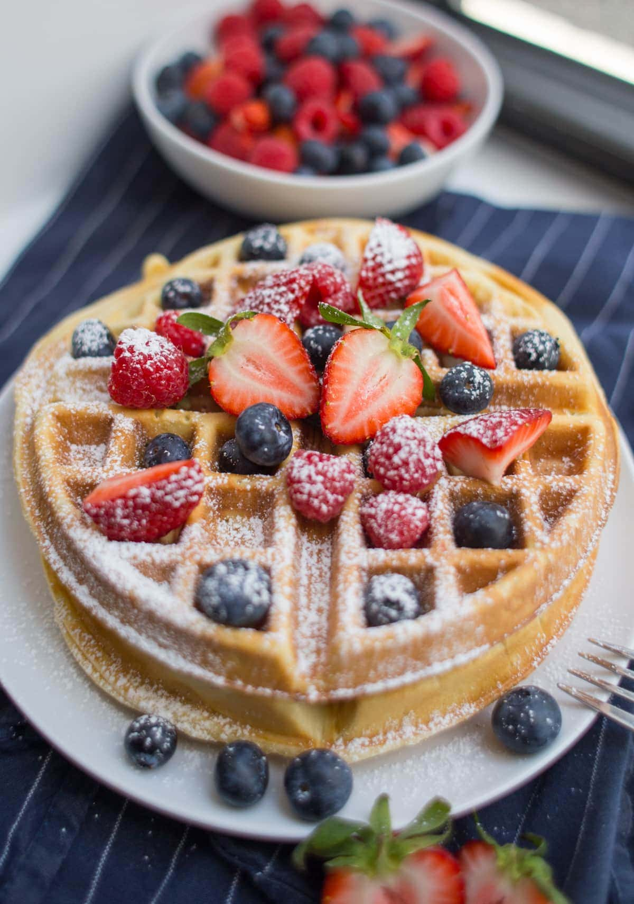

In English-speaking countries, Belgian waffles are a variety of waffle with a lighter batter, larger squares, and deeper pockets than North American waffles. Belgian waffles were originally leavened with yeast, but baking powder is now often used. They are often eaten as a breakfast food; toppings vary from whipped cream, confectioners' sugar, soft fruit, and chocolate spread, to syrup and butter or margarine. They may also be served with vanilla ice cream and fresh fruit (such as strawberries) as a dessert.
 Waffle picture off googleOriginally showcased in 1958 at Expo 58 in Brussels, Belgian waffles were introduced to the United States by a Belgian named Walter Cleyman at the Century 21 Exposition in Seattle in 1962, and served with whipped cream and strawberries. The waffles were further popularized in the United States during the 1964 New York World's Fair at Flushing Meadows Park in Queens, New York City. These waffles were introduced by Maurice Vermersch of Brussels, Belgium. Largely based on a simplified recipe for the Brussels waffles, Vermersch decided to change the name to the Bel-Gem Waffle upon observing that many Americans could not correctly identify Brussels as the capital of Belgium. These waffles were served with whipped cream and strawberries, and they were sold for a dollar.